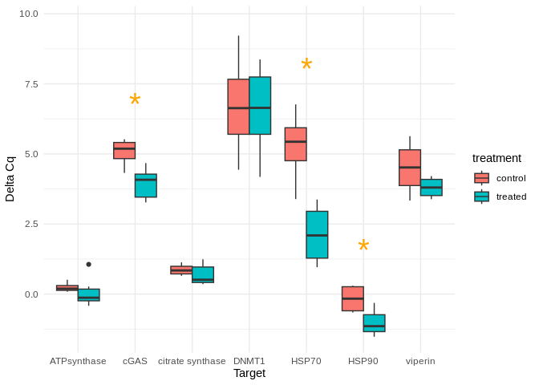
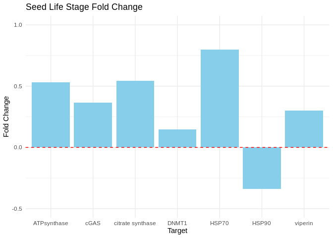
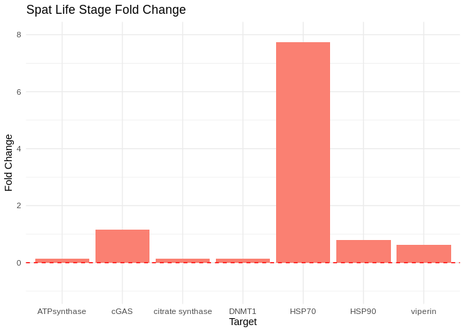

INTRO
qPCR analysis of Crassostrea gigas (Pacific oyster) spat and seed from the project-gigas-carryover (GitHub Repo).
Metadata:
- 20240314_rna_extractions.csv (GitHub; commit:
82f1a4b).
Not all of the samples listed in the sheet above were used in the qPCRs, due to lack of RNA during isolation (Notebook).
Background info notebooks:
Isolated RNA for gigas carryover project (Notebook)
Reverse transcribed RNA for gigas carryover project (Notebook)
Code below was rendered from 20240327-cgig-lifestage-carryover-qpcr-analysis.Rmd, commit f9af1eb.
1 ANALYSIS
1.1 Load libraries
if ("tidyverse" %in% rownames(installed.packages()) == 'FALSE') install.packages('tidyverse')
library("tidyverse")
library("ggplot2")1.2 Set variables
seed.control <- c("223", "243", "244")
seed.treated <- c("200", "257", "285")
spat.control <- c("206", "282", "284", "289")
spat.treated <- c("220", "226", "242", "253", "296", "298")
# Combine vectors into a list
vector_list <- list(seed.control = seed.control,
seed.treated = seed.treated,
spat.control = spat.control,
spat.treated = spat.treated)1.3 Functions
calculate_delta_Cq <- function(df) {
df <- df %>%
group_by(Sample) %>%
mutate(delta_Cq = Cq.Mean - Cq.Mean[Target == "GAPDH"]) %>%
ungroup()
return(df)
}1.4 Read in files
# Set the directory where your CSV files are located
cqs_directory <- "../data/"
# Get a list of all CSV files in the directory with the naming structure "*Cq_Results.csv"
cq_file_list <- list() # Initialize list
cq_file_list <- list.files(path = cqs_directory, pattern = "Cq_Results\\.csv$", full.names = TRUE)
# Initialize an empty list to store the data frames
data_frames <- list()
# Loop through each file and read it into a data frame, then add it to the list
for (file in cq_file_list) {
data <- read.csv(file, header = TRUE)
data_frames[[file]] <- data
}
# Combine all data frames into a single data frame
combined_df <- bind_rows(data_frames, .id = "data_frame_id")
# Convert Sample column to character type
combined_df <- combined_df %>%
mutate(Sample = as.character(Sample))
str(combined_df)'data.frame': 272 obs. of 17 variables:
$ data_frame_id : chr "../data//sam_2024-03-25_06-10-54_Connect-Quantification-Cq_Results.csv" "../data//sam_2024-03-25_06-10-54_Connect-Quantification-Cq_Results.csv" "../data//sam_2024-03-25_06-10-54_Connect-Quantification-Cq_Results.csv" "../data//sam_2024-03-25_06-10-54_Connect-Quantification-Cq_Results.csv" ...
$ X : logi NA NA NA NA NA NA ...
$ Well : chr "A01" "A02" "A03" "A04" ...
$ Fluor : chr "SYBR" "SYBR" "SYBR" "SYBR" ...
$ Target : chr "ATPsynthase" "ATPsynthase" "ATPsynthase" "ATPsynthase" ...
$ Content : chr "Unkn-01" "Unkn-01" "Unkn-02" "Unkn-02" ...
$ Sample : chr "206" "206" "220" "220" ...
$ Biological.Set.Name : logi NA NA NA NA NA NA ...
$ Cq : num 26.7 26.7 25.8 25.9 25.1 ...
$ Cq.Mean : num 26.7 26.7 25.9 25.9 25.1 ...
$ Cq.Std..Dev : num 0.0455 0.0455 0.0239 0.0239 0.0813 ...
$ Starting.Quantity..SQ.: num NaN NaN NaN NaN NaN NaN NaN NaN NaN NaN ...
$ Log.Starting.Quantity : num NaN NaN NaN NaN NaN NaN NaN NaN NaN NaN ...
$ SQ.Mean : num NaN NaN NaN NaN NaN NaN NaN NaN NaN NaN ...
$ SQ.Std..Dev : num NaN NaN NaN NaN NaN NaN NaN NaN NaN NaN ...
$ Set.Point : int 60 60 60 60 60 60 60 60 60 60 ...
$ Well.Note : logi NA NA NA NA NA NA ...1.5 Unique samples by target
# Group by Sample and Target, then summarize to get unique rows for each sample
aggregated_df <- combined_df %>%
group_by(Sample, Target) %>%
summarize(Cq.Mean = mean(Cq.Mean, na.rm = TRUE)) %>%
ungroup()
str(aggregated_df)tibble [136 × 3] (S3: tbl_df/tbl/data.frame)
$ Sample : chr [1:136] "200" "200" "200" "200" ...
$ Target : chr [1:136] "ATPsynthase" "DNMT1" "GAPDH" "HSP70" ...
$ Cq.Mean: num [1:136] 25.2 33.6 25.4 31.8 26 ...1.6 Add life stage and treatment cols
# Initialize new columns
aggregated_df <- aggregated_df %>%
mutate(life.stage = NA_character_,
treatment = NA_character_)
# Loop through each vector
for (vec_name in names(vector_list)) {
vec <- vector_list[[vec_name]]
stage <- strsplit(vec_name, "\\.")[[1]][1]
treatment <- strsplit(vec_name, "\\.")[[1]][2]
# Loop through each row in aggregated_df
for (i in 1:nrow(aggregated_df)) {
sample <- aggregated_df$Sample[i]
# Check if sample is in the vector
if (sample %in% vec) {
# Update life.stage and treatment columns
aggregated_df$life.stage[i] <- stage
aggregated_df$treatment[i] <- treatment
}
}
}
str(aggregated_df)tibble [136 × 5] (S3: tbl_df/tbl/data.frame)
$ Sample : chr [1:136] "200" "200" "200" "200" ...
$ Target : chr [1:136] "ATPsynthase" "DNMT1" "GAPDH" "HSP70" ...
$ Cq.Mean : num [1:136] 25.2 33.6 25.4 31.8 26 ...
$ life.stage: chr [1:136] "seed" "seed" "seed" "seed" ...
$ treatment : chr [1:136] "treated" "treated" "treated" "treated" ...1.7 Delta Cq to Normalizing Gene
# Calculate delta Cq by subtracting GAPDH Cq.Mean from each corresponding Sample Cq.Mean
delta_Cq_df <- calculate_delta_Cq(aggregated_df)
str(delta_Cq_df)tibble [136 × 6] (S3: tbl_df/tbl/data.frame)
$ Sample : chr [1:136] "200" "200" "200" "200" ...
$ Target : chr [1:136] "ATPsynthase" "DNMT1" "GAPDH" "HSP70" ...
$ Cq.Mean : num [1:136] 25.2 33.6 25.4 31.8 26 ...
$ life.stage: chr [1:136] "seed" "seed" "seed" "seed" ...
$ treatment : chr [1:136] "treated" "treated" "treated" "treated" ...
$ delta_Cq : num [1:136] -0.243 8.168 0 6.349 0.578 ...1.8 T-tests
# Filter out groups with missing life.stage or Target
# Caused by NTCs
# Also removes normalizing gene(s)
delta_Cq_df_filtered <- delta_Cq_df %>%
filter(!is.na(life.stage), !is.na(Target), Target != "GAPDH")
# Perform t-test for each Target within life.stage
t_test_results <- delta_Cq_df_filtered %>%
group_by(life.stage, Target) %>%
summarise(
t_test_result = list(t.test(delta_Cq ~ treatment))
) %>%
ungroup()
# Extract t-test statistics
t_test_results <- t_test_results %>%
mutate(
estimate_diff = sapply(t_test_result, function(x) x$estimate[1] - x$estimate[2]),
p_value = sapply(t_test_result, function(x) x$p.value)
) %>%
select(!t_test_result)
# Add asterisk information to data frame
# Useful for plotting
t_test_results$asterisk <- ifelse(t_test_results$p_value < 0.05, "*", "")1.9 Delta Cq Box Plots
1.9.1 Seed
library(ggplot2)
# Filter delta_Cq_df_filtered for seed life stage
seed_delta_Cq_df <- delta_Cq_df_filtered %>%
filter(life.stage == "seed")
# Create the box plot
boxplot <- ggplot(seed_delta_Cq_df, aes(x = Target, y = delta_Cq, fill = treatment)) +
geom_boxplot(position = position_dodge(width = 0.75)) +
theme_minimal() +
theme(legend.position = "right") +
labs(x = "Target", y = "Delta Cq")
# Add asterisks
boxplot +
annotate("text", x = t_test_results$Target, y = Inf, label = t_test_results$asterisk,
vjust = -0.5, size = 4, color = "orange")
Box plots comparing GAPDH-normalized gene expression (delta Cq) between control and treated seed.
1.9.2 Spat
# Filter data for life.stage = "spat"
spat_delta_Cq <- delta_Cq_df_filtered %>%
filter(life.stage == "spat")
# Calculate the maximum delta_Cq for each Target
max_delta_Cq_by_target <- spat_delta_Cq %>%
group_by(Target) %>%
summarise(max_delta_Cq = max(delta_Cq, na.rm = TRUE))
# Merge t_test_results with max_delta_Cq_by_target to get the maximum delta_Cq for each Target
t_test_results_with_max_delta_Cq <- merge(t_test_results, max_delta_Cq_by_target, by = "Target")
# Create the box plot
boxplot <- ggplot(spat_delta_Cq, aes(x = Target, y = delta_Cq, fill = treatment)) +
geom_boxplot(position = position_dodge(width = 0.75)) +
theme_minimal() +
theme(legend.position = "right") +
labs(x = "Target", y = "Delta Cq")
# Add asterisks
boxplot +
annotate("text", x = t_test_results_with_max_delta_Cq$Target,
y = t_test_results_with_max_delta_Cq$max_delta_Cq + 0.5,
label = t_test_results_with_max_delta_Cq$asterisk,
vjust = -0.5, size = 10, color = "orange")
Box plots comparing GAPDH-normalized gene expression (delta Cq) between control and treated spat.
1.10 Delta delta Cq
1.10.1 Add treatment and life stage
# Initialize empty vectors to store life.stage and treatment
life_stage <- character(nrow(combined_df))
treatment <- character(nrow(combined_df))
# Loop through each row of combined_df
for (i in 1:nrow(combined_df)) {
sample_id <- combined_df$Sample[i]
# Check if the sample_id is present in any of the vectors
found <- FALSE
for (vec_name in names(vector_list)) {
if (sample_id %in% vector_list[[vec_name]]) {
# If present, extract life.stage and treatment from the vector name
parts <- strsplit(vec_name, "\\.")[[1]]
life_stage[i] <- parts[1]
treatment[i] <- parts[2]
found <- TRUE
break # Exit loop once found
}
}
# If sample_id is not found in any vector, assign NA to both life.stage and treatment
if (!found) {
life_stage[i] <- NA
treatment[i] <- NA
}
}
# Add life.stage and treatment columns to combined_df
combined_df <- combined_df %>%
mutate(life.stage = life_stage,
treatment = treatment)
# Filter out rows where life.stage is NA
combined_df_filtered <- combined_df %>%
filter(!is.na(life.stage))
str(combined_df_filtered)'data.frame': 256 obs. of 19 variables:
$ data_frame_id : chr "../data//sam_2024-03-25_06-10-54_Connect-Quantification-Cq_Results.csv" "../data//sam_2024-03-25_06-10-54_Connect-Quantification-Cq_Results.csv" "../data//sam_2024-03-25_06-10-54_Connect-Quantification-Cq_Results.csv" "../data//sam_2024-03-25_06-10-54_Connect-Quantification-Cq_Results.csv" ...
$ X : logi NA NA NA NA NA NA ...
$ Well : chr "A01" "A02" "A03" "A04" ...
$ Fluor : chr "SYBR" "SYBR" "SYBR" "SYBR" ...
$ Target : chr "ATPsynthase" "ATPsynthase" "ATPsynthase" "ATPsynthase" ...
$ Content : chr "Unkn-01" "Unkn-01" "Unkn-02" "Unkn-02" ...
$ Sample : chr "206" "206" "220" "220" ...
$ Biological.Set.Name : logi NA NA NA NA NA NA ...
$ Cq : num 26.7 26.7 25.8 25.9 25.1 ...
$ Cq.Mean : num 26.7 26.7 25.9 25.9 25.1 ...
$ Cq.Std..Dev : num 0.0455 0.0455 0.0239 0.0239 0.0813 ...
$ Starting.Quantity..SQ.: num NaN NaN NaN NaN NaN NaN NaN NaN NaN NaN ...
$ Log.Starting.Quantity : num NaN NaN NaN NaN NaN NaN NaN NaN NaN NaN ...
$ SQ.Mean : num NaN NaN NaN NaN NaN NaN NaN NaN NaN NaN ...
$ SQ.Std..Dev : num NaN NaN NaN NaN NaN NaN NaN NaN NaN NaN ...
$ Set.Point : int 60 60 60 60 60 60 60 60 60 60 ...
$ Well.Note : logi NA NA NA NA NA NA ...
$ life.stage : chr "spat" "spat" "spat" "spat" ...
$ treatment : chr "control" "control" "treated" "treated" ...1.10.2 Mean Cqs per gene per treatment per life stage
# Group by life.stage, treatment, and Target, then calculate the mean Cq
mean_Cq_df <- combined_df_filtered %>%
group_by(life.stage, treatment, Target) %>%
summarise(mean_Cq = mean(Cq, na.rm = TRUE))1.10.3 Delta Cqs
# Calculate delta Cq
combined_df_with_delta_Cq <- mean_Cq_df %>%
group_by(life.stage, treatment) %>%
mutate(delta_Cq = mean_Cq - mean(mean_Cq[Target == "GAPDH"])) %>%
ungroup() %>%
filter(Target != "GAPDH")1.10.4 Delta delta Cq
# Calculate delta_delta_Cq
delta_delta_Cq_df <- combined_df_with_delta_Cq %>%
group_by(life.stage, Target) %>%
summarize(delta_delta_Cq = delta_Cq[treatment == "treated"] - delta_Cq[treatment == "control"])1.10.5 Calculate the fold change for each Target
delta_delta_fold_change <- delta_delta_Cq_df %>%
mutate(fold_change = 2^(-delta_delta_Cq)) %>%
distinct(Target, fold_change)
str(delta_delta_fold_change)gropd_df [14 × 3] (S3: grouped_df/tbl_df/tbl/data.frame)
$ life.stage : chr [1:14] "seed" "seed" "seed" "seed" ...
$ Target : chr [1:14] "ATPsynthase" "DNMT1" "HSP70" "HSP90" ...
$ fold_change: num [1:14] 1.532 1.146 1.8 0.662 1.365 ...
- attr(*, "groups")= tibble [2 × 2] (S3: tbl_df/tbl/data.frame)
..$ life.stage: chr [1:2] "seed" "spat"
..$ .rows : list<int> [1:2]
.. ..$ : int [1:7] 1 2 3 4 5 6 7
.. ..$ : int [1:7] 8 9 10 11 12 13 14
.. ..@ ptype: int(0)
..- attr(*, ".drop")= logi TRUE1.10.6 Plot - Seed Fold Change
# Filter delta_delta_fold_change for seed life stage
seed_df <- delta_delta_fold_change %>%
filter(life.stage == "seed")
# Create bar plot for seed life stage
# Create the plot with fold changes relative to baseline of 1
seed_plot <- ggplot(seed_df, aes(x = Target, y = fold_change - 1)) +
geom_bar(stat = "identity", fill = "skyblue") +
geom_hline(yintercept = 0, linetype = "dashed", color = "red") + # Baseline
theme_minimal() +
labs(x = "Target", y = "Fold Change", title = "Seed Life Stage Fold Change") +
scale_y_continuous(limits = c(-0.5, 1))
# Display plot
seed_plot
Bar plots showing fold change in expression (2^(-delta delta Cq)) in seed.
1.10.7 Plot - Spat Fold Change
# Filter delta_delta_fold_change for spat life stage
spat_df <- delta_delta_fold_change %>%
filter(life.stage == "spat")
# Create bar plot for spat life stage
# Create the plot with fold changes relative to baseline of 1
spat_plot <- ggplot(spat_df, aes(x = Target, y = fold_change - 1)) +
geom_bar(stat = "identity", fill = "salmon") +
geom_hline(yintercept = 0, linetype = "dashed", color = "red") + # Baseline
theme_minimal() +
labs(x = "Target", y = "Fold Change", title = "Spat Life Stage Fold Change") +
scale_y_continuous(limits = c(-1, 8))
# Display plot
spat_plot
Bar plots showing fold change in expression (2^(-delta delta Cq)) in spat.